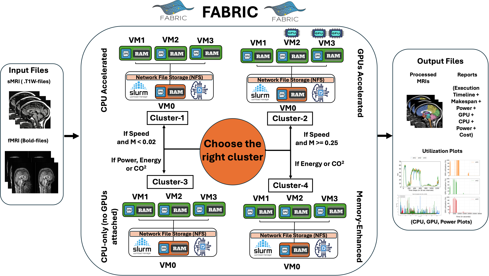
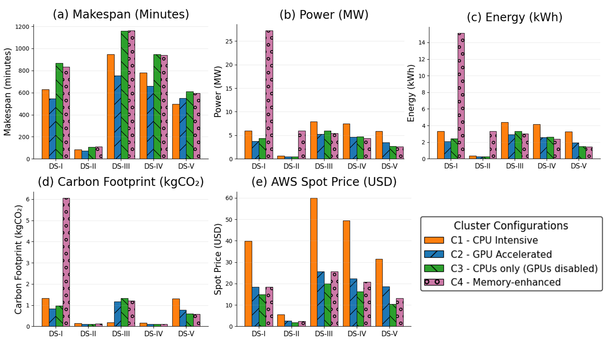
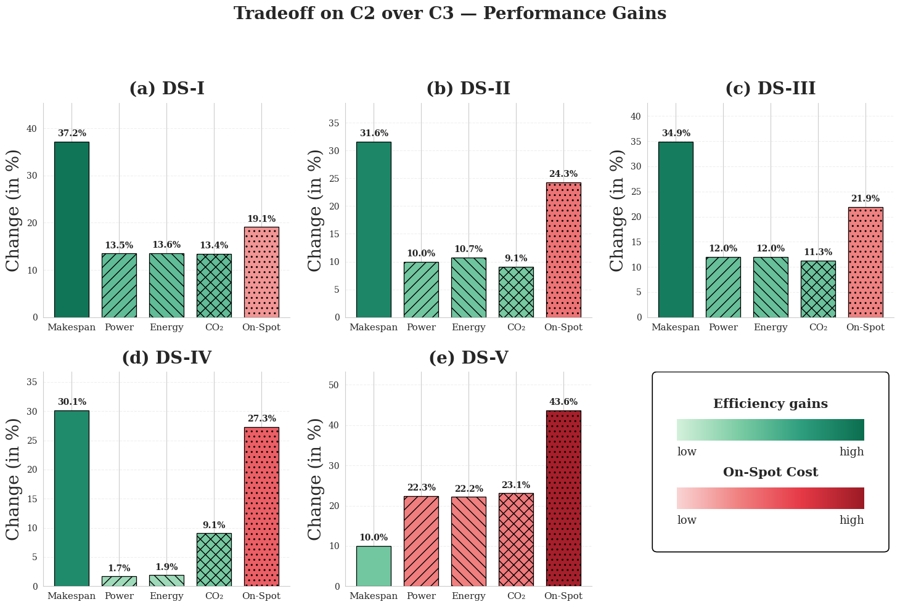
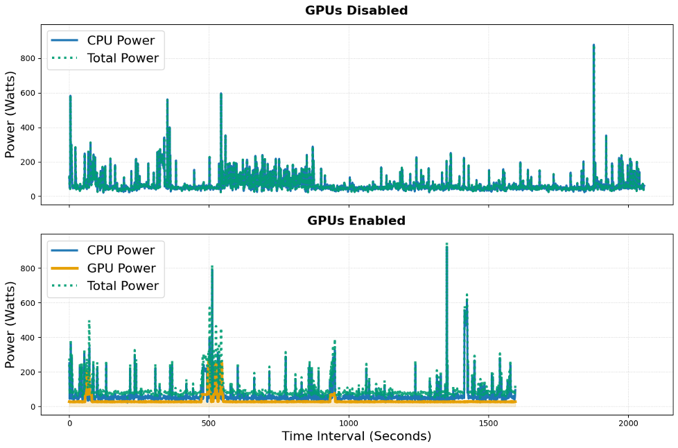
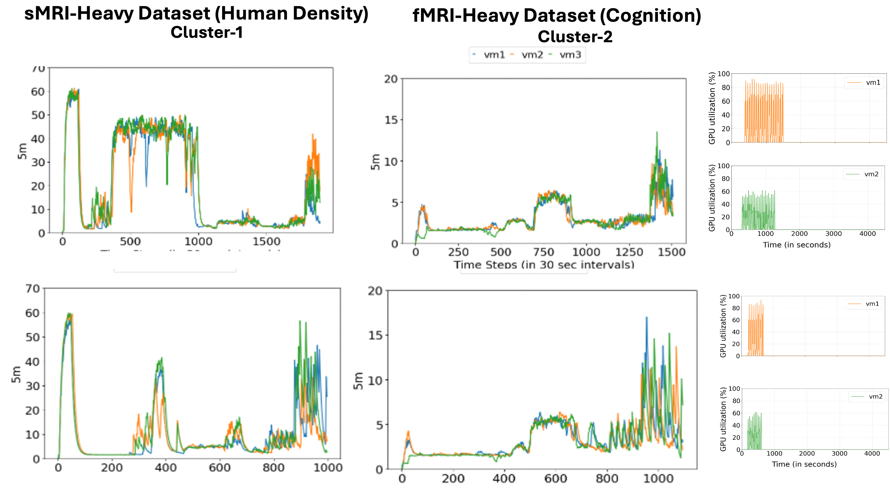

The first systematic multi-objective workload characterization of a deep-learning-accelerated neuroimaging pipeline across heterogeneous cluster configurations on the NSF FABRIC testbed.
Preprocessing of structural and functional MRI (sMRI and fMRI) remains one of the most computationally intensive stages in neuroscience research. Although the recently published DeepPrep workflow (Nature Methods) delivers more than 10× speedup over the classic fMRIPrep pipeline through GPU-accelerated neural networks and supports scalable distributed/HPC batch processing, its real-world performance, power consumption, energy efficiency, and cloud cost on heterogeneous commodity clusters have not been systematically characterized.
We present the first comprehensive workload characterization of DeepPrep on the NSF-funded FABRIC testbed across five diverse neuroimaging datasets. We evaluate four representative cluster configurations — CPU-intensive (C1), modest GPU-accelerated (C2), CPU-only (C3), and Memory-enhanced (C4) — and introduce the Dataset Morphology Index (sMRI/fMRI scan-size ratio) as a simple yet powerful predictor of the optimal hardware configuration.
Across most datasets, the modest GPU-accelerated cluster (C2) emerges as the Pareto-optimal choice, delivering approximately 28% lower runtime, 32% lower energy and carbon emissions, and 53% lower spot-instance cost relative to a high-core CPU cluster (C1). These results challenge the conventional "more GPUs are always better" assumption and provide practical, morphology-aware hardware-selection guidelines for sustainable scientific computing.
Each experiment runs DeepPrep on a 4-node FABRIC slice (1 master + 3 workers) with power monitored
at 2-second intervals via powertop and nvidia-smi. The Dataset Morphology
Index M selects the cluster; a multi-criteria algorithm maps M and user priority
to the Pareto-optimal configuration.

Four cluster configurations were instantiated at distinct FABRIC sites to demonstrate location-independent resource experimentation. All CPUs operate at 2395.45 MHz.
| ID | Configuration | vCPUs (total) | GPUs | RAM/node (total GB) | FABRIC Site | Best For |
|---|---|---|---|---|---|---|
| C1 | High-Core CPU-Intensive | 64 (192) | — | 64 (192) | HAWI — Hawaii | fMRI-dominant (M < 0.02) |
| C2 | GPU-Accelerated ⭐ | 16 (48) | 2× RTX 6000 + 1× T4 | 64 (192) | UCSD — San Diego | Pareto-optimal (most datasets) |
| C3 | Standard-Core CPU-Only | 16 (48) | — | 64 (192) | FIU — Miami | Moderate M, cost/power priority |
| C4 | Memory-Enhanced | 16 (48) | — | 128 (384) | MAX — College Park | Avoid — severe power penalty |
Table 3 in the paper reports makespan, CPU hours, average power (CPU, GPU, total), energy, carbon footprint, and AWS spot cost across all 20 (cluster × dataset) cells. The figure below summarizes the key trade-offs.


C2 reduces makespan by 17.7–28.3% over C1 and 10.0–37.2% over C3 across DS-I through DS-IV. Stage-selective GPU engagement (FastSurferCNN, FastCSR, SUGAR, SynthMorph) keeps average GPU draw at just 40–48 W vs. a 660 W aggregate TDP.
Under region-aware eGRID2023 factors, C2's carbon advantage grows to ~80% over C1 vs. the ~13% suggested by a flat uniform factor — underscoring the importance of geography-aware sustainability analysis.
C4 reaches 1.09 kW average power on DS-I and 1.81 kW on DS-II — 7.2× higher energy and 10.1× higher carbon than C2 — with no proportional makespan benefit. A classic over-provisioning pitfall, now rigorously quantified.
C1 is only advantageous for extreme fMRI-dominant workloads (M < 0.02, DS-V). The Dataset Morphology Index correctly predicts the optimal cluster on all 5/5 datasets, outperforming two natural alternative predictors.
Fine-grained power and CPU/GPU utilization traces explain the mechanisms behind the performance differences. GPU offload engages selectively during the four deep-learning stages, keeping power stable and low compared to the high-variability CPU-only runs.


Datasets were chosen to span a wide range of subject populations, imaging modalities, data volumes, and sMRI/fMRI ratios — collectively 346 scans, 127 subjects, 12.6 GB. All are publicly available via OpenNeuro / NITRC.
| ID | Dataset | Subjects | Scans | Size | sMRI (MB) | fMRI (MB) | M | Optimal |
|---|---|---|---|---|---|---|---|---|
| DS-I | Professional Chess Players | 29 | 58 (29+29) | 1.1 GB | 7.4–16 | 25–27 | 0.45 | C2 |
| DS-II | NeuroCycle+ | 4 | 100 (sMRI only) | 3 GB | 24–39 | — | ∞ | C2 |
| DS-III | Human Dignity | 40 | 80 (40+40) | 2.7 GB | 12–13 | 53–62 | 0.22 | C2 |
| DS-IV | Tumor (glioma/meningioma) | 36 | 72 (36+36) | 1.6 GB | 6.4–7.7 | 35–40 | 0.19 | C2 |
| DS-V | Ongoing Cognition | 18 | 36 (18+18) | 4.2 GB | 3.4–4.4 | 193–410 | 0.013 | C1 |
All datasets are available as BIDS-formatted archives. Download instructions are included in the anonymous artifact repository.
We introduce M — the ratio of average sMRI to average fMRI scan size — as a simple, runtime-computable feature that predicts the Pareto-optimal cluster before any processing begins. It achieves 5/5 correct classifications including both boundary regimes, outperforming scan-count ratio and total dataset size.
For datasets containing only sMRI scans (e.g., DS-II), M := ∞ by convention, routing the workload to the sMRI-dominant branch. M is computed directly from the BIDS directory before any pipeline execution.
from pathlib import Path
import numpy as np, os
def morphology_index(bids_dir):
smri = [os.path.getsize(f)
for f in Path(bids_dir).rglob("*T1w.nii*")]
fmri = [os.path.getsize(f)
for f in Path(bids_dir).rglob("*bold.nii*")]
if not fmri:
return float('inf')
return np.mean(smri) / np.mean(fmri)| M ≥ 0.25 | sMRI-dominant → C2 (GPU stages dominate) |
| M < 0.02 | fMRI-dominant → C1 (CPU parallelism wins) |
| 0.02 ≤ M < 0.25 | Moderate M → resolve by priority: makespan → C2 cost / power / energy / CO₂ → C3 |
DeepPrep's GPU-accelerated stages (FastSurferCNN, FastCSR, SUGAR, SynthMorph) all operate on the sMRI pathway. fMRI preprocessing remains predominantly CPU-bound. M approximates the fraction of computational work that benefits from GPU offload — the quantity that determines whether C2 dominates C1.
Two natural alternatives — scan-count ratio and total dataset size — are demonstrably weaker: the scan-count ratio is degenerate on 4/5 datasets (1:1), and total size correlates with the correct answer here only incidentally.
If you use DeepNeuroBench scripts, datasets, or methodology in your research, please cite:
Also cite the underlying DeepPrep pipeline: